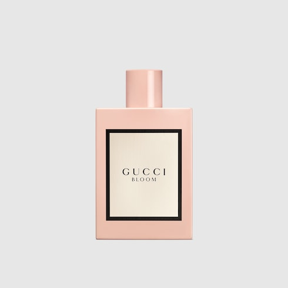
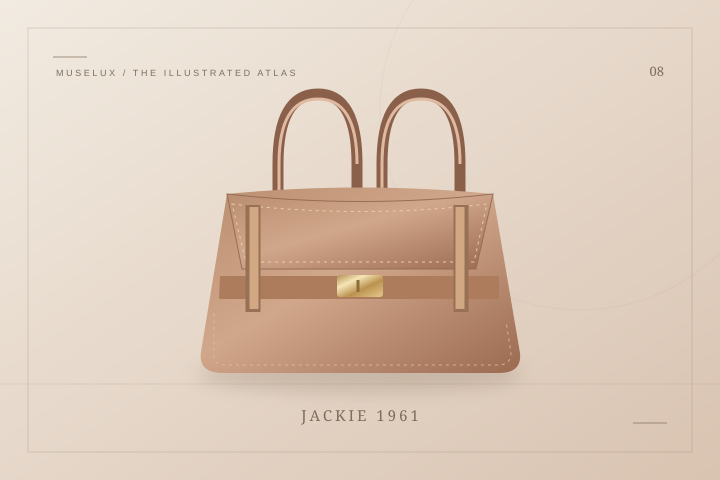
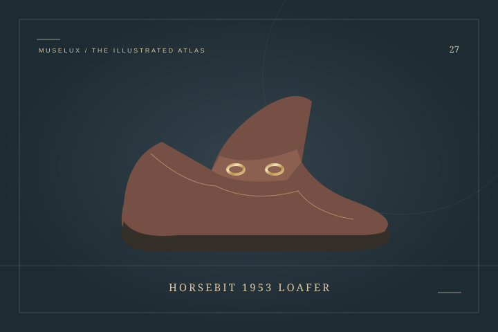

THE STYLE EDITGucci
Gucci Bloom Eau de Parfum, 100 ml
Gucci Bloom offers a useful starting point for someone drawn to white flowers.
US$168Explore ↗
U.S. reference · before taxTHE HOUSE / 意大利 / EST. 1921
古驰 — 在马衔扣与竹节间，读意式想象
古驰的设计语言像一本有颜色的旅行笔记：马衔扣、竹节提手、织带与花卉图案，来自不同年代，也会在新作品里相遇。品牌由古驰奥·古驰在佛罗伦萨创立，早期皮具与旅行用品的背景，让实用结构始终藏在装饰背后。Jackie 的弧形袋身看起来随意，扣件却有清楚的节奏；Flora 图案则把一块丝绸变成可以随身带走的花园。阅读这个品牌，不必一次记全所有符号。选一个自己喜欢的细节，看看它从哪里来，又怎样在不同材质上改变性格，已经是一条很有趣的入门路线。
A FEW CHAPTERS IN TIME
古驰奥·古驰在佛罗伦萨开店
竹节提手手袋问世
纽约门店开业，马衔扣乐福鞋推出
Jackie 手袋的经典前身诞生
Flora 花卉图案诞生
品牌在佛罗伦萨举行首场时装秀
ICONS OF THE HOUSE

THE STYLE EDITGucci Bloom offers a useful starting point for someone drawn to white flowers.
 THE STYLE EDIT
THE STYLE EDITThis Flora carré layers bright flowers over a GG ground and frames the composition with a broad pink border.
 THE STYLE EDIT
THE STYLE EDITThis small Jackie translates the family’s curved outline into a slim canvas bag with an easy, close-to-the-body profile.

在一条弧线里，找到松弛的分寸。
打开词条 ↗
把马术的一点线索，走进城市生活。
打开词条 ↗KEEP READING